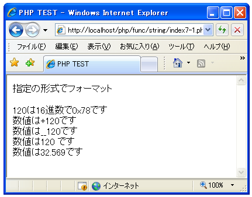

指定の形式にフォーマット(sprintf)
引数に指定した値を指定の形式にフォーマットした文字列を取得します。「sprintf」関数を利用します。
sprintf string sprintf ( string $format [, mixed $args [, mixed $... ]] )
フォーマット文字列 format に基づき生成された文字列を返します。 引数： $format フォーマット形式(詳細は後述) $args 対象の値(値の数は可変) 戻り値： フォーマットされた文字列
2番目以降の引数に指定した値を指定した形式にフォーマットします。形式は1番目の引数で指定し変換方法などを記述した文字列を指定します。例えば次のようなイメージです。
文字列の中に(変換方式1)や(変換方式2)を記述します。
このフォーマット形式の場合、2つの値を変換しますので対象となる値を2つ指定します。
sprint("文字列の中に(変換方式1)や(変換方式2)を記述します。", 値1, 値2)
値1が変換方式1で変換され、値2が変換方式2で変換されて結果として次のような文字列が取得できます。
文字列の中に(値1が変換されたもの)や(値2が変換されたもの)を記述します。
変換方式の指定方法
では変換方式の記述方法を確認します。次のような書式で指定します。
%[符号指定子][パディング指定子][アラインメント指定子][表示幅指定子][精度指定子]型指定子
フォーマットの中には「%」で始まり必須の項目である型指定子を指定します。それ以外の指定子はオプションです。
型指定子
型指定子として指定できる値は次の通りです。
% - パーセント文字。引数は不要です。
b - 引数を整数として扱い、バイナリの数値として表現します。
c - 引数を整数として扱い、その ASCII 値の文字として表現します。
d - 引数を整数として扱い、 10 進数として表現します。
e - 引数を科学記法として扱います (例 1.2e+2)。精度の指定子は、PHP 5.2.1
以降では小数点以下の桁数を表します。
u - 引数を整数として扱い、符号無しの 10 進数として表現します。
f - 引数を double として扱い、浮動小数点数として表現します。
F - 引数を float として扱い、浮動小数点数として表現します(ロケールに依存
しません)。
o - 引数を整数として扱い、 8 進数として表現します。
s - 引数を文字列として扱い、表現します。
x - 引数を整数として扱い、16 進数として(小文字で)表現します。
X - 引数を整数として扱い、16 進数として(大文字で)表現します。
例えば次のように記述します。
%d %x
型指定子は必須の指定子です。「%」の後に指定したい型に対応する1文字を記述します。
具体的には次のように記述します。
$num = 120;
$str = sprintf("%dは16進数で0x%X", $num, $num);
符号指定子
符号指定子は数値を表示する時に符号を付けるかどうかを指定します。デフォルトでは負の値の場合のみ「-」記号が付きます。正の数の場合でも「+」符号を表示する場合は「+」を指定します。
例えば次のように記述します。
%+d
具体的には次のように記述します。
$num = 120;
$str = sprintf("数値は%+dです", $num);
パディング指定子
パディング指定子は文字列が指定の長さに満たない場合にどの文字を使って埋めるのかを指定します。デフォルトでは空白です。0を指定すると0詰めとなります。0以外の文字を指定することもできますがその場合はシングルクオーテーションを文字の前に付加します。
例えば次のように記述します。
%0d %'_d
パディング指定子を使う場合には後で説明する表示幅指定子を併用します。
具体的には次のように記述します。
$num = 120;
$str = sprintf("数値は%05dです", $num);
アラインメント指定子
アラインメント指定子は結果として取得できる文字列を左寄せにするか右寄せにするかを指定します。デフォルトは左寄せです。右寄せにする場合は「-」を指定します。
例えば次のように記述します。
%-d
パディング指定子を使う場合には後で説明する表示幅指定子を併用します。
具体的には次のように記述します。
$num = 120;
$str = sprintf("数値は%-5dです", $num);
表示幅指定子指定子
表示幅指定子指定子は文字列を最低限何桁にするのかを指定します。
例えば次のように記述します。
%5d
桁数に満たなかった場合にどのように表示されるかはパディング指定子とアラインメント指定子によって決まります。
具体的には次のように記述します。
$num = 120;
$str = sprintf("数値は%5dです", $num);
精度指定子
精度指定子は浮動小数点数に対して少数点以下の表示桁数を指定します。指定する場合はドット(.)の後に桁数を指定します。
例えば次のように記述します。
%.3f
小数点以下の桁数が指定した桁数よりも多かった場合には、指定した桁で四捨五入が行われます。
具体的には次のように記述します。
$num = 120;
$str = sprintf("数値は%.3fです", $fnum);
サンプルプログラム
では簡単なサンプルで試してみます。
<html>
<head><title>PHP TEST</title></head>
<body>
<p>指定の形式でフォーマット</p>
<?php
$num = 120;
print(sprintf("%dは16進数で0x%Xです", $num, $num).'<br>');
print(sprintf("数値は%+dです", $num).'<br>');
print(sprintf("数値は%'_5dです", $num).'<br>');
print(sprintf("数値は%-7dです", $num).'<br>');
$fnum = 32.5687;
print(sprintf("数値は%.3fです", $fnum).'<br>');
?>
</body>
</html>
上記ファイルをWWWサーバに設置しブラウザ経由で見ると下記のように表示されます。

( Written by Tatsuo Ikura )

著者 / TATSUO IKURA
初心者～中級者の方を対象としたプログラミング方法や開発環境の構築の解説を行うサイトの運営を行っています。